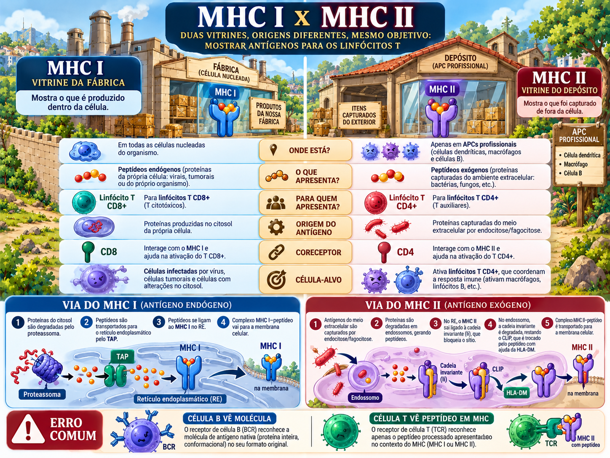

MHC e apresentação de antígenos
Duas vitrines, duas origens de antígeno e uma regra central: TCR só reconhece peptídeo no contexto do MHC.

Restrição pelo MHC: o TCR nunca vê “antígeno solto”
A célula T reconhece um complexo: peptídeo + molécula de MHC. Isso resolve um problema que anticorpos não conseguem resolver: inspecionar o interior das células por meio de “amostras” exibidas na superfície.
HLA/MHC: polimorfismo com função populacional
Os loci de HLA são extremamente polimórficos. Cada pessoa expressa alelos herdados de ambos os pais de forma codominante. Isso amplia, na população, a diversidade de peptídeos que podem ser apresentados — mas complica transplantes.
MHC I
HLA-A, HLA-B, HLA-C; cadeia α polimórfica + β2-microglobulina não polimórfica.
MHC II
HLA-DP, DQ, DR; duas cadeias codificadas no complexo MHC.
MHC I — vitrine da fábrica
própria, viral ou tumoral
degrada em peptídeos
transporta peptídeos ao RE
carrega peptídeo e vai à membrana
inspeciona e pode matar
MHC II — vitrine do depósito
fagocitado/endocitado
catepsinas geram peptídeos
protege a fenda no RE
troca CLIP por peptídeo
coordena resposta
MHC I x MHC II lado a lado
Apresentação cruzada: a exceção que salva a resposta CD8
Uma célula dendrítica pode capturar material exógeno de células infectadas ou tumorais, transferi-lo ao citosol e apresentá-lo em MHC I. Isso permite ativar CD8 naive mesmo quando a própria dendrítica não está infectada.
Quem apresenta para quem?
| Célula | Força | Uso típico |
|---|---|---|
| Dendrítica | Excelente ativadora de T naive; muita coestimulação após perigo. | Iniciar resposta adaptativa. |
| Macrófago | Apresenta antígeno que fagocitou. | Receber ajuda de Th1 e aumentar capacidade microbicida. |
| Linfócito B | Apresenta peptídeo da proteína capturada pelo BCR. | Receber ajuda de Tfh e melhorar a resposta humoral. |
Transplante: quando “self” e HLA deixam de coincidir
Na via direta, T do receptor reconhece HLA alogênico intacto em APCs do doador; é particularmente importante na rejeição aguda precoce. Na via indireta, APCs do receptor processam proteínas do doador e apresentam peptídeos em MHC próprio; esse mecanismo persiste e participa da rejeição crônica.
Vírus produz proteína no citosol de uma célula epitelial. Qual sequência é a melhor?